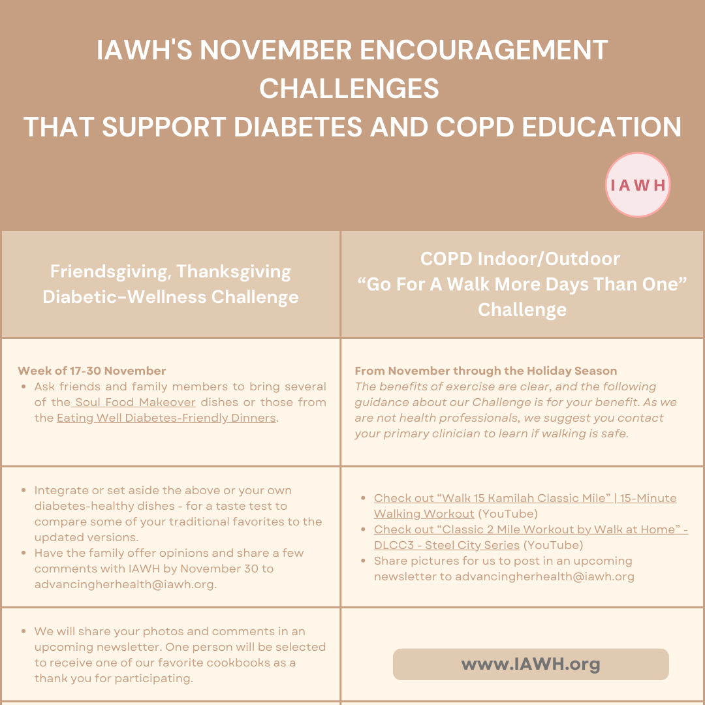

According to the National Institute of Diabetes, Digestive and Kidney Diseases (NIDDK), diabetes is a disease that occurs when your blood glucose, also called blood sugar, is too high. It affects about 38 million Americans, including adults and youth. Diabetes can damage the eyes, kidneys, nerves, and heart, and it is also linked to some types of cancer. But there's also good news: Taking charge of your health may help you prevent diabetes health problems. You may find these 10 Facts About Diabetes helpful. For those who want to take a proactive approach to their health, we have a helpful short video, 'Take Charge of Tomorrow: Preventing Diabetes Health Problems.
COPD Learn More, Breathe Better
COPD, or chronic obstructive pulmonary disease, is caused by damage to the airways or other parts of the lung. This damage leads to inflammation and other problems that block airflow and make breathing difficult. Two of the most common types of COPD are chronic bronchitis and emphysema. It's most often caused by smoking cigarettes or other tobacco products or long-term exposure to lung irritants, such as air pollution, chemicals, or dust.
When a person has COPD, less air can flow into and out of the lungs because of one or more of the following:
- The walls of the airways in the lungs, known as bronchial tubes, become inflamed and thickened (known as chronic bronchitis).
- The walls between many of the tiny air sacs in the lungs are destroyed (known as emphysema).
- The air sacs and the airways in the lungs are less elastic.
- The airways in the lungs produce more mucus than normal, which can cause them to become clogged.
Over ten million Americans suffer from Chronic Obstructive Pulmonary Disease (COPD), which is the third leading cause of death in the United States. The prevalence of COPD among women is rising faster than among men, and their rates of prevalence and mortality have become comparable.
Women with COPD often face more significant shortness of breath and worse quality of life-related to symptoms, as well as higher rates of anxiety and depression. A study revealed that one in four COPD patients had persistent depressive symptoms over three years, with being female significantly increasing this risk.

COPD can cause a cough with mucus, breathing difficulties, and chest tightness. As a progressive disease, its symptoms worsen over time, often limiting individuals’ daily activities and, in severe cases, preventing them from performing basic tasks such as walking or cooking. Learn More, Breathe Better information
IAWH's November Encouragement Challenges that Support Diabetes and COPD Awareness
IAWH Heart Healthy Holiday Meals
Duration: Week of 17-30 November (and beyond for longevity)
As we near Friendsgiving, Thanksgiving, and other connections and gatherings, why not try Soul Food Makeover — Heart Healthy African American Recipes? For years, many people have begun to focus on more heart-healthy menu items for their festive table, but we thought it would be fun to try some with you. See the table for more information.
IAWH's "Go for A Walk More Days Than One"*Duration: From November through the Holiday Season
The benefits of exercise are clear, and the following guidance about our Encouragement Challenge is for your benefit. As we are not health professionals, we suggest you contact your primary clinician to learn if walking is safe.
Generally, walking is a safe and effective exercise for people with chronic obstructive pulmonary disease. Walking can help improve breathing, reduce symptoms, and build endurance. It can also help people with COPD feel better and more self-sufficient overall. The IAWH "Go For A Walk More Days Than One" is our way of suggesting that you walk for exercise, but start by trying to walk more than one day per week. Depending on where you live, you may need to walk indoors due to weather or other conditions. Still, there may be more opportunities to perform this exercise with friends or family during the holiday season, which makes the effort more fun for some. Check out our encouragement challenges in the table below.

I plan to encourage walking first thing in the morning on Thanksgiving with my two adult children (“Umm, are you reading this, my dear children?). After that event, I'll add a few days to my favorite outdoor walking area and the treadmill.
Are you planning to encourage and challenge yourself and a few friends to join you? If so, please share some pictures for us to post in an upcoming newsletter.
Here are some tips for walking in general, and especially if you are managing with COPD:
- Start slowly: If you haven't been active, check with your doctor before starting an exercise program. You can begin by adding 10 yards or 30 seconds to your daily walk.
- Choose a good location: You can walk outside, in a mall, or on a treadmill. Malls are a good choice because they are usually flat, air-conditioned, and have many resting places.
- Consider a local walking group: Joining a walking group can be helpful.
- Use a pedometer: A pedometer can help you increase your walking - many phones and watches can help you achieve daily and weekly goals.
- Set goals: Set goals to increase your walking.
- Other exercises that can help with COPD include physiotherapy, tai chi, yoga, bicycle riding, and dancing.
You should stop exercising and rest or call for help if you experience any of the following symptoms:
- Chest pain
- Feeling weak
- Dizziness or lightheadedness
- Unexplained weight gain or swelling
- Pressure or pain in your chest, neck, arm, jaw, or shoulder
IAWH November Educational Resources
- Women and Diabetes (Federal Drug Administration)
- Diabetes in the LBGTQ Community (Centers for Disease Control and Prevention)
- Take Charge of Tomorrow: Preventing Diabetes Health Problems (YouTube video); also NIDDK webpage.
- Chronic Obstructive Pulmonary Disease (COPD) in Women (Brigham and Women's Hospital)
- Learn to Breathe Better Program: Tools include COPD Resources, Asthma Resources, Lung Health Resources, Videos, How the Lungs Work, and more.
- Physical Activity and COPD and Lung Cancer Awareness (The American Lung Association)
Janine E. Payne, MPHCo-Director, IAWH
This article first appeared on the IAWH Health blog on November 11, 2024 and is preserved here as part of the IAWH Health Journal archive. Information reflects what was known at the time of publication. This article is for general education and is not medical advice.